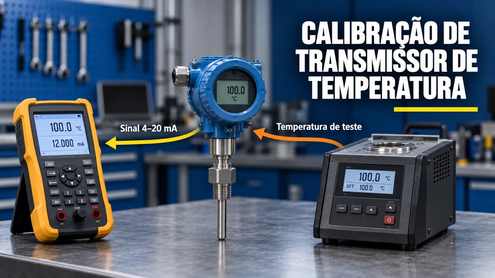

Calibração de Transmissor de Temperatura
Conteúdo técnico: ALOGY Engenharia · Atualizado em: 11/09/2026

Calibrar um transmissor de temperatura exige definir primeiro o que está sendo verificado: somente a eletrônica, o sensor separado ou o conjunto sensor + transmissor. Simular um RTD ou termopar nos bornes verifica a conversão elétrica, mas não avalia o sensor instalado, o termopoço nem a influência da montagem.
RTD/PT100, termopar e entrada configurada
Em uma entrada RTD, o transmissor interpreta resistência. Tipo de elemento, ligação a 2, 3 ou 4 fios e resistência dos cabos afetam o resultado. Em uma entrada de termopar, o transmissor interpreta uma tensão em milivolts; tipo J/K/T/E/N/R/S/B, polaridade, material dos cabos de extensão e cold junction compensation precisam estar coerentes.
Selecionar PT100 quando o instrumento está configurado para outro RTD, ou simular termopar sem tratar corretamente a junta fria, produz erro de método que pode ser confundido com defeito do transmissor.
As-found e as-left
Antes de qualquer ajuste, registre a condição as-found. Se houver correção prevista no procedimento, repita os pontos e registre a condição as-left. Isso separa a deriva encontrada do desempenho depois do ajuste.
Dados necessários antes da calibração
- Sensor: RTD/PT100/PT500/PT1000 ou tipo de termopar e curva correspondente.
- Ligação: número de fios, polaridade, bornes e compensação de junta fria.
- Faixa: LRV e URV em °C, °F ou unidade configurada.
- Saída: 4–20 mA, protocolo digital e escala no PLC/DCS.
- Padrão: simulador, dry block ou banho com faixa, rastreabilidade e incerteza adequadas.
Simulação elétrica ou temperatura real?
Na simulação elétrica, o calibrador reproduz o sinal de um RTD ou termopar e permite comparar a saída do transmissor. É um teste rápido da eletrônica e da configuração. Na calibração com bloco seco ou banho, sensor e transmissor podem ser avaliados como sistema, comparando a temperatura de referência com a indicação e a corrente.
Se a eletrônica passa na simulação, mas o conjunto apresenta erro em temperatura real, investigue sensor, cabos, termopoço, imersão, contato térmico, gradiente e tempo de estabilização.
Saída esperada em 4–20 mA
Para um transmissor linear, a corrente esperada é 4 mA + 16 mA × fração da faixa. Em uma configuração de −50 a 150 °C, o ponto de 50 °C está em 50% do span e corresponde a 12 mA.
Erros comuns de campo
- Simular o tipo errado de sensor ou usar curva diferente da configurada.
- Inverter polaridade de termopar ou empregar cabo de extensão incompatível.
- Ignorar resistência de fios em RTD de 2 fios ou ligação incorreta em 3/4 fios.
- Registrar o ponto antes da estabilização térmica.
- Ajustar o transmissor sem registrar o as-found.
- Declarar o conjunto aprovado quando apenas a eletrônica foi simulada.
Exemplo prático
Considere um transmissor de −50 a 150 °C. O calibrador simula 50 °C e a saída medida é 12,16 mA. A corrente está 0,16 mA acima do esperado. Na escala configurada, isso corresponde a +2 °C. O valor deve ser comparado ao erro máximo permitido e à incerteza do método antes de qualquer conclusão.
Checklist rápido
- Tipo de sensor, ligação e faixa foram conferidos?
- A compensação de junta fria está coerente com o método?
- Os pontos de subida e descida foram registrados?
- A estabilização foi confirmada antes da leitura?
- O relatório diferencia eletrônica, sensor e conjunto completo?
- As-found e as-left foram registrados?
Ferramentas relacionadas
Referências para aprofundamento
- Fluke 724 — simulação de RTD/termopar e medição de 4–20 mA.
- Fluke Calibration 9144 — calibração com fonte de temperatura.
Aviso técnico
Este conteúdo é educativo e serve para apoio técnico. Em aplicações críticas ou emissão de certificados, valide o método com procedimento, documentação do fabricante, padrões rastreáveis, incerteza e profissional responsável.